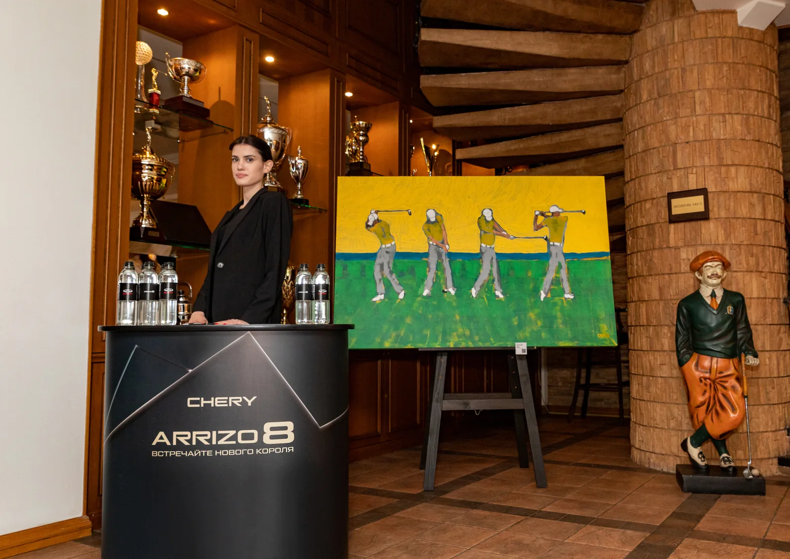
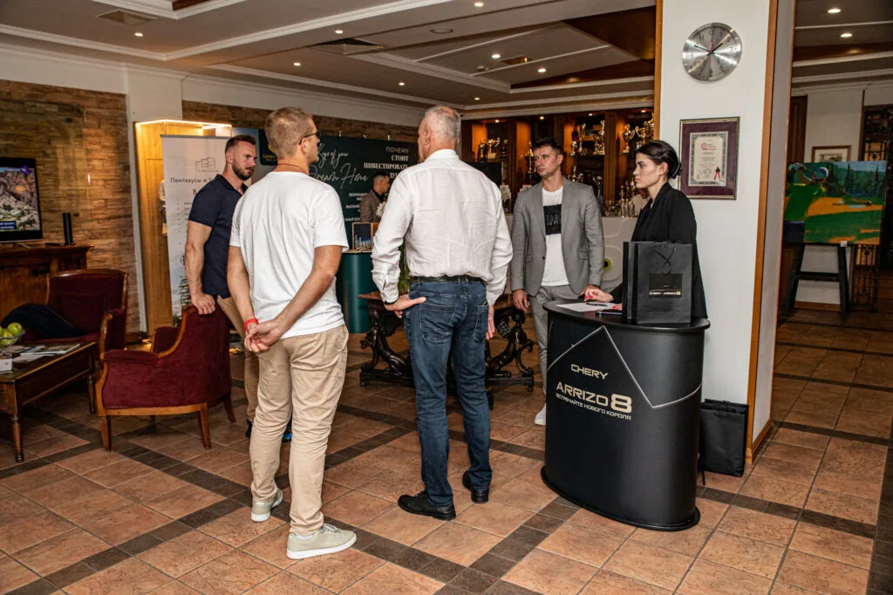
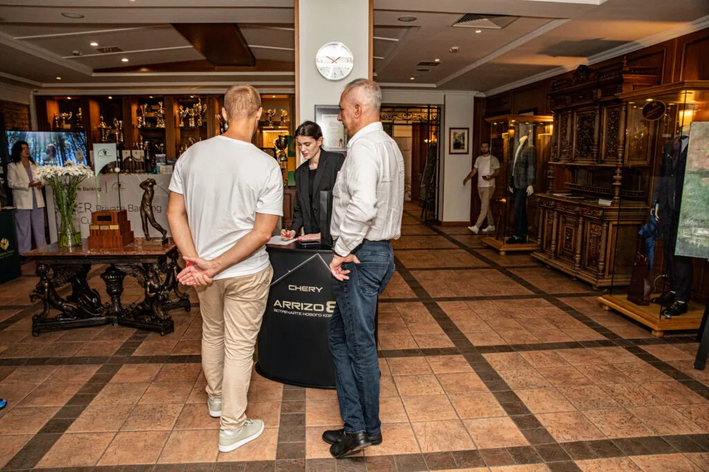
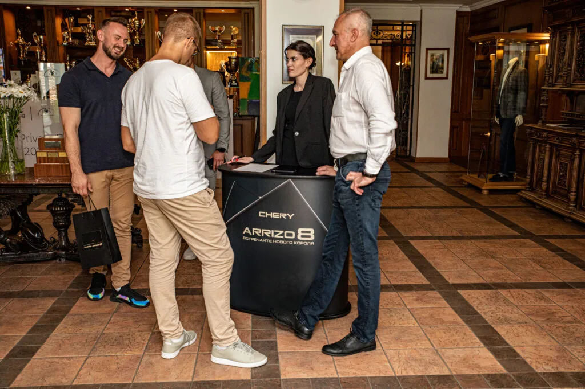

ИНТЕГРАЦИЯ В ГОЛЬФ-ТУРНИР
Точный выбор
места для встречи.
CHERY ARRIZO 8 в атмосфере гольф-клуба. Брендированная зона, внимание к гостям и личное общение в привычной для участников турнира обстановке.
Бренд встречает гостей
на их территории.
Гольф-турнир — это игра, клубная атмосфера и разговоры между участниками. Именно в этот контекст была встроена интеграция CHERY ARRIZO 8.
Присутствие бренда получило понятную форму: отдельная стойка в клубном пространстве, фирменное оформление и команда, готовая к диалогу с гостями.

Заметное присутствие.
Естественный разговор.
Лаконичная стойка с названием модели обозначает место встречи с CHERY. Она вписана в интерьер клуба и оставляет пространство для главного — общения.
Здесь знакомство с брендом начинается с разговора: можно остановиться у стойки, задать вопрос и уделить модели внимание в своём темпе.


Сила интеграции —
в уместности.
В этом проекте акцент сделан на близости к аудитории: бренд присутствует там, где люди уже проводят время и общаются. Оформление делает его узнаваемым, а команда придаёт этому присутствию человеческий голос.
Так складывается содержательная встреча с брендом — в подходящем месте и через личный диалог.
Найдём место
для вашего бренда.
Планируете интеграцию в спортивное или клубное событие? Поможем продумать присутствие бренда: от идеи и оформления до взаимодействия с гостями.
Обсудить интеграцию ↗NEXT CASE